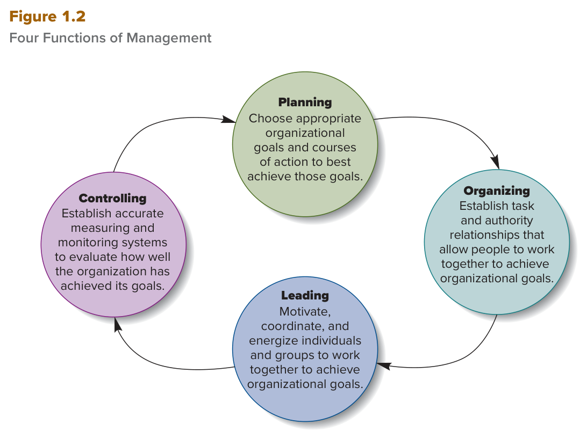

MGT 102 · Chapter 1 · القسم ٢ من ٤:
The Four Functions of Management
الهدف LO1-2: Distinguish among planning, organizing, leading, and controlling (the four principal managerial functions), and explain how managers' ability to handle each one affects organizational performance.
الوظائف الأربع — planning، organizing، leading، controlling — مو بس درس في الفصل الأول. الكتاب كله مبني عليها: كل فصل بعدين يشرح وحدة منها بالتفصيل. ولو جاك سؤال في الاختبار فيه سيناريو ويقول «المدير سوّى كذا… أي وظيفة هذي؟» فهذا القسم هو الجواب.
اقرأ الدرس مرّتين. في المرة الثانية ركّز على الفرق بين كل وظيفة والثانية — هذا اللي يختبرونه.
الكتاب يقول شغل الإدارة هو مساعدة المنظمة تستخدم مواردها أحسن استخدام عشان تحقق أهدافها. طيب كيف؟ عن طريق أربع وظائف أساسية (essential managerial functions):
| # | الوظيفة | بالعربي | وش يسوي المدير باختصار |
|---|---|---|---|
| ١ | Planning | التخطيط | يختار الأهداف ويقرر كيف يوصل لها |
| ٢ | Organizing | التنظيم | يرتّب الناس والأقسام وعلاقات الشغل عشان يشتغلون مع بعض |
| ٣ | Leading | القيادة | يوضّح الرؤية ويحمّس الموظفين |
| ٤ | Controlling | الرقابة | يقيس الأداء ويصحّح الغلط |
أول واحد كتب هذي الوظائف هو المدير الفرنسي Henri Fayol (هنري فايول) في بداية القرن العشرين، في كتابه General and Industrial Management — ولليوم الكتاب يعتبره المرجع الكلاسيكي لوش لازم يسوي المدير عشان يبني منظمة عالية الأداء.

هذا هو شكل Figure 1.2 في الكتاب. الأسهم تبيّن التسلسل اللي عادةً يمشي عليه المدير: تخطيط → تنظيم → قيادة → رقابة، والرقابة ترجّعك للتخطيط من جديد. احفظ الترتيب والرقم اللي جنب كل وحدة.
ثلاث نقاط الكتاب يأكّد عليها:
مثال من الكتاب (إطار Manager as a Person): Bernard Kim، الرئيس التنفيذي لشركة Match Group (صاحبة Tinder وHinge): يعيد ضبط استراتيجيات التخطيط عشان يجذب مشتركين جدد، والتنظيم عنده للحين يتغيّر (أعلن استقالة رئيس تيندر بعد نتايج ضعيفة، والفريق يراجع خطط تيندر الجاية)، ويعتبر الابتكار والتوسّع العالمي (زي إطلاق Hinge في ألمانيا) مقياس أداء، ويطبّق رقابة على تكاليف الموظفين والتسويق. الكتاب يقول أسلوبه في الوظائف الأربع هو اللي يمشّي الشركة في وقت صعب.
The four principal managerial functions are planning, organizing, leading, and controlling. Managers at all levels of the organization and in all departments perform these functions. Effective management means managing these activities successfully.
How well managers perform these functions determines how efficient and effective their organizations are. French manager Henri Fayol first outlined the nature of these managerial activities around the turn of the 20th century in General and Industrial Management.
Planning (التخطيط): المدير يحدد ويختار الأهداف المناسبة ومسارات العمل (courses of action)، ويطوّر strategies (استراتيجيات) عشان يوصل لأداء عالي. الكتاب يقسّمه لثلاث خطوات — احفظها بالترتيب:
وجودة التخطيط هي اللي تحدد مستوى أداء المنظمة — كفاءتها وفعاليتها.
مثال الكتاب: Airbnb لما قررت تسمح لموظفيها يشتغلون من أي مكان (work from anywhere). الرئيس التنفيذي Brian Chesky جرّب الفكرة بنفسه، حسب التكاليف (إدارة رواتب وضرايب أعقد)، ووزنها مع الفوايد (جذب موظفين أكثر + إيرادات من شركات ثانية بتحجز إقامات طويلة عن طريق Airbnb)، وحدد أهداف للموظفين في الفترات اللي لازم يكونون فيها بالمكتب. هذا تخطيط بحذافيره: هدف، استراتيجية، موارد.
Organizing (التنظيم): بناء علاقات العمل (structuring working relationships) عشان أعضاء المنظمة يتفاعلون ويتعاونون لتحقيق الأهداف. يعني: توزيع الناس على أقسام (departments) حسب نوع الشغل، وتحديد خطوط السلطة والمسؤولية (lines of authority and responsibility) — مين يأمر مين، ومين مسؤول عن وش. وأهم مورد يرتّبه المدير هنا هو الموارد البشرية (human resources).
ناتج التنظيم اسمه organizational structure (الهيكل التنظيمي): نظام رسمي من علاقات المهام والتبعية (task and reporting relationships) ينسّق ويحفّز الأعضاء عشان يشتغلون مع بعض. الهيكل هو اللي يحدد كيف تستخدم المنظمة مواردها أحسن استخدام لإنتاج السلع والخدمات.
مثال الكتاب: في الجايحة، إيرادات Airbnb انهارت لأن الناس وقفت سفر. الرئيس التنفيذي أعاد التفكير في الهيكل: دمج أقسام وقلّص العمليات للوظائف الأساسية بس عشان تبقى الشركة خفيفة لين رجع العالم طبيعي. هذا تنظيم. (الكتاب يشرح التنظيم بالتفصيل في الفصول ١٠–١٢.)
| Planning | Organizing | |
|---|---|---|
| السؤال اللي يجاوبه | وش نبي نحقق؟ وكيف؟ | مين يسوي وش؟ ومين يرجع لمين؟ |
| كلمات تكشفه بالاختبار | goals · strategies · courses of action · allocate resources | departments · authority · responsibility · reporting relationships |
| الناتج | أهداف واستراتيجيات | organizational structure |
To perform the planning function, managers identify and select appropriate organizational goals and courses of action; they develop strategies for how to achieve high performance. The three steps involved in planning are deciding which goals the organization will pursue, deciding what strategies to adopt to attain those goals, and deciding how to allocate organizational resources to pursue the strategies that attain those goals.
Organizing is structuring working relationships so organizational members interact and cooperate to achieve organizational goals. The outcome of organizing is the creation of an organizational structure, a formal system of task and reporting relationships that coordinates and motivates members so they work together to achieve organizational goals.
قبل القيادة، لازم تعرف كلمة vision (الرؤية): بيان قصير ومختصر وملهم (short, succinct, and inspiring) عن وش المنظمة تبي تصير وأي أهداف تسعى لها — يعني الحالة المستقبلية المطلوبة (desired future state). زي رؤية ٢٠٣٠ بالضبط: جملة قصيرة تشدّ الناس.
Leading (القيادة): المدير يوضّح رؤية واضحة للأعضاء، ويشحن ويمكّن الموظفين (energize and enable) عشان كل واحد يفهم دوره في تحقيق الأهداف. أدوات القائد حسب الكتاب: power (السلطة)، personality (الشخصية)، influence (التأثير)، persuasion (الإقناع)، وcommunication skills (مهارات التواصل) — يستخدمها عشان ينسّق الناس والمجموعات، وتكون جهودهم متناغمة (in harmony). القيادة كلها تدور حول تشجيع كل الموظفين على أداء عالي.
ناتج القيادة: قوى عاملة متحمّسة وملتزمة (highly motivated and committed workforce). مثال الكتاب: موظفين Airbnb يقدّرون قيم قيادتهم، خصوصاً طريقة Chesky الإبداعية في سياسة العمل عن بعد. (تفاصيل القيادة في الفصول ١٣–١٦.)
Controlling (الرقابة): المدير يقيّم مدى تحقيق المنظمة لأهدافها، وياخذ إجراءات تصحيحية (corrective actions) عشان يحافظ على الأداء أو يحسّنه. كيف؟
ناتج الرقابة: القدرة على قياس الأداء بدقة (measure performance accurately) وضبط كفاءة وفعالية المنظمة. ونقطة يحبون يسألون عنها: الرقابة تساعد المدير يقيّم أداءه هو نفسه في الوظائف الثلاث الثانية (تخطيط، تنظيم، قيادة) ويصحّحها. عشان كذا السهم في الشكل يرجع من الرقابة للتخطيط.
| Leading | Controlling | |
|---|---|---|
| الأفعال اللي تكشفه | articulate · energize · enable · motivate | evaluate · measure · monitor · corrective action |
| الأدوات | vision · power · personality · influence · persuasion · communication | performance standards · control systems |
| الناتج | motivated and committed workforce | measure performance accurately |
An organization's vision is a short, succinct, and inspiring statement of what the organization intends to become and the goals it is seeking to achieve—its desired future state. In leading, managers articulate a clear organizational vision for the organization's members to accomplish, and they energize and enable employees so everyone understands the part they play in achieving organizational goals. Another outcome of leadership is a highly motivated and committed workforce.
In controlling, the function of managers is to evaluate how well an organization has achieved its goals and to take any corrective actions needed to maintain or improve performance. The outcome of the control process is the ability to measure performance accurately and regulate organizational efficiency and effectiveness. The controlling function also helps managers evaluate how well they themselves are performing the other three functions of management—planning, organizing, and leading—and take corrective action.
لحد الحين الكتاب صوّر الإدارة كأنها عملية مرتّبة: تجمع المعلومات، تفكّر، وتقرر. Henry Mintzberg (أستاذ في جامعة McGill) كان من أوائل اللي وضّحوا: الواقع غير. الإدارة غالباً فوضوية (chaotic)، فيها قرارات سريعة في جو متوتر وأحياناً عاطفي. المدير مثقل بمسؤوليات، ما عنده وقت يحلّل كل تفصيلة، فيقرر تحت عدم اليقين (uncertain conditions)، ويعتمد على الحدس والخبرة (intuition and experience) عشان ياخذ قرارات فورية (snap decisions). وقرار صح اليوم ممكن يطلع غلط بكرة.
منتزبرغ تابع مديرين وراقب وش يسوون فعلاً ساعة بساعة ويوم بيوم، وطلع بـ١٠ أدوار (roles = مجموعات مسؤوليات وظيفية) وقسّمها حسب طبيعة المسؤولية إلى ثلاث فئات: decisional (قرارية)، interpersonal (شخصية / علاقات)، informational (معلوماتية). هذا هو Table 1.1 في الكتاب:
| الفئة | الدور | وش يسوي (أمثلة الكتاب) |
|---|---|---|
| Decisional قرارية · ٤ أدوار |
Entrepreneur المبادر |
يحط فلوس وموارد على منتجات وخدمات جديدة ومبتكرة؛ يقرر يفتح برا البلد عشان يجيب عملاء جدد. |
| Disturbance handler معالج الأزمات |
يتحرك بسرعة ويصلّح لما تجي مشكلة مفاجئة: من برا زي تسرّب نفط، أو من داخل زي منتجات طلعت معيوبة. | |
| Resource allocator موزّع الموارد |
يقسّم الموارد على المهام والأقسام؛ هو اللي يحدد الميزانيات ورواتب مديري الإدارة الوسطى ومديري الخط الأول. | |
| Negotiator المفاوض |
يتفاوض مع الموردين والموزعين والنقابات على السعر والجودة؛ ويتفق مع شركات ثانية على مشاريع مشتركة. | |
| Interpersonal شخصية / علاقات · ٣ أدوار |
Figurehead الرمز / الواجهة |
يعلن الأهداف بالاجتماع، يفتتح المبنى الجديد، ويقول للموظفين وش الأخلاقيات اللي نمشي عليها مع العملاء والموردين. |
| Leader القائد |
يكون قدوة للموظفين؛ يعطي أوامر مباشرة؛ يقرر كيف يستخدم الناس والتقنية؛ ويجمّع الموظفين ورا هدف معيّن. | |
| Liaison حلقة الوصل |
ينسّق بين مديري الأقسام المختلفة؛ ويسوّي تحالفات مع شركات ثانية عشان يتشاركون الموارد ويطلّعون منتجات جديدة. | |
| Informational معلوماتية · ٣ أدوار |
Monitor المراقب |
يشيك على أداء المديرين ويصحّحه؛ ويراقب وش يتغيّر جوّا الشركة وبراها وممكن يأثر عليها بعدين. |
| Disseminator الناشر (للداخل) |
يخبّر الموظفين بالتغيّرات اللي بتأثر عليهم؛ ويوصّل لهم رؤية الشركة ووش هدفها. | |
| Spokesperson المتحدث (للخارج) |
يطلق إعلان على مستوى البلد لمنتجات جديدة؛ ويطلع يتكلم للناس عن خطط الشركة الجاية. |
وآخر نقطة: بسبب هذي المسؤوليات المعقدة، كثير من المديرين يحسبون نفسهم يأدّون شغلهم كويس لو صابوا نص الوقت بس. وعشان كذا المديرين أصحاب الخبرة يعتبرون فشل الموظف جزء طبيعي من التعلّم ومرحلة لازم يمر فيها عشان يصير مدير فعّال — الكل يتعلم من نجاحاته وفشله.
Henry Mintzberg was one of the first to show that management is often chaotic, marked by quick decisions in a tense and sometimes emotional environment. Managers often must make snap decisions using the intuition and experience gained through their careers. By following managers and observing what they actually do hour by hour and day by day, Mintzberg identified 10 kinds of specific roles, or sets of job responsibilities, that capture the dynamic nature of managerial work. He grouped these roles according to whether the responsibility is primarily decisional, interpersonal, or informational.
الأسئلة بالإنجليزي لأن الاختبار بالإنجليزي. جاوب قبل ما تفتح الحل. لو غلطت في ١ أو ٤، ارجع لفخ «planning مقابل controlling».
B. هذي هي الخطوات الثلاث حرفياً من تعريف planning: أهداف → استراتيجيات → توزيع موارد. الفخ في A: كلمة allocate resources تخلّيك تفكر تنظيم، بس الكتاب يحطها كالخطوة الثالثة من التخطيط. وD فخ كلمة goals — الرقابة تقيّم الأهداف، ما تختارها.
B. Negotiator دور من أدوار Mintzberg (فئة decisional)، مو وظيفة من الأربع. الفخ: السؤال بـNOT، وحاط لك ثلاث وظائف صحيحة عشان تتسرّع وتختار وحدة منها. الأربع هي planning, organizing, leading, controlling — لا غير.
C. «صورة واضحة لوش الشركة تبي تصير» = vision، و«يشحن الموظفين عشان كل واحد يفهم دوره» = energize and enable. الاثنين من تعريف leading. الفخ في A: الرؤية تبدو زي تخطيط، لكن الكتاب يحطها تحت القيادة. وB فخ: التنظيم هيكل رسمي وأقسام، مو خطاب تحفيزي.
D. performance standards + corrective action = بصمة الرقابة بالضبط: يقيّم مدى تحقيق الأهداف ويصحّح. الفخ في A: السؤال فيه معايير وأهداف، لكن المدير هنا ما يختارها — يقيس هل تحققت. اختيار = تخطيط، قياس = رقابة.
A. «يتحرك بسرعة لمشكلة مفاجئة زي تسرّب نفط» هو مثال الكتاب حرفياً على disturbance handler، وهو دور قراري. الفخ في B: كلمة أزمة تجرّك لـmonitor، لكن المراقب يقيّم أداء المديرين ويتابع البيئة — ما يطفّي حريق. وD فخ: entrepreneur بنفس الفئة (decisional) لكنه عن الابتكار والتوسّع. وتذكّر العدد: ١٠ أدوار، ٣ فئات.
| English | بالعربي | الفخ |
|---|---|---|
| Planning | التخطيط | ٣ خطوات: أهداف → استراتيجيات → موارد |
| Organizing | التنظيم | علاقات عمل + أقسام + سلطة ومسؤولية |
| Organizational structure | الهيكل التنظيمي | ناتج التنظيم — نظام رسمي |
| Leading | القيادة | رؤية + energize and enable |
| Vision | الرؤية | قصيرة وملهمة — desired future state — تحت leading |
| Controlling | الرقابة | evaluate + corrective action؛ تقيّم الوظائف الثلاث الثانية |
| Strategy | الاستراتيجية | كيف توصل للهدف — خطوة ٢ من التخطيط |
| Corrective action | إجراء تصحيحي | بصمة controlling |
| Henri Fayol | هنري فايول | صاحب الوظائف الأربع (~1900) |
| Henry Mintzberg | هنري منتزبرغ | صاحب الأدوار العشرة — الإدارة فوضوية |
| Decisional roles | الأدوار القرارية | ٤: entrepreneur · disturbance handler · resource allocator · negotiator |
| Interpersonal roles | أدوار العلاقات | ٣: figurehead · leader · liaison |
| Informational roles | الأدوار المعلوماتية | ٣: monitor · disseminator · spokesperson |
| Disturbance handler | معالج الأزمات | أزمة مفاجئة — decisional |
| Figurehead | الرمز / الواجهة | يعلن الأهداف بالاجتماعات، يفتتح مبنى، يعلن المبادئ الأخلاقية — interpersonal مو spokesperson |
| Monitor | المراقب | informational — مو controlling |
| Disseminator / Spokesperson | الناشر / المتحدث | للداخل / للخارج |
مبني من نص الكتاب Contemporary Management (Jones & George، McGraw Hill) —
Chapter 1: Managers and Managing، القسم الثاني Essential Managerial Functions،
الهدف LO1-2 (صفحات ٦–٩)، مع ملخّص الكتاب Summary and Review.
ناقص: الإطار الجانبي Manager as a Person (قصة Bernard Kim وMatch Group)
ملخّص بسطرين بس، وأمثلة Airbnb مختصرة. التفاصيل الكاملة للتنظيم في الفصول ١٠–١٢ وللقيادة في ١٣–١٦ — مو في هذا الفصل.